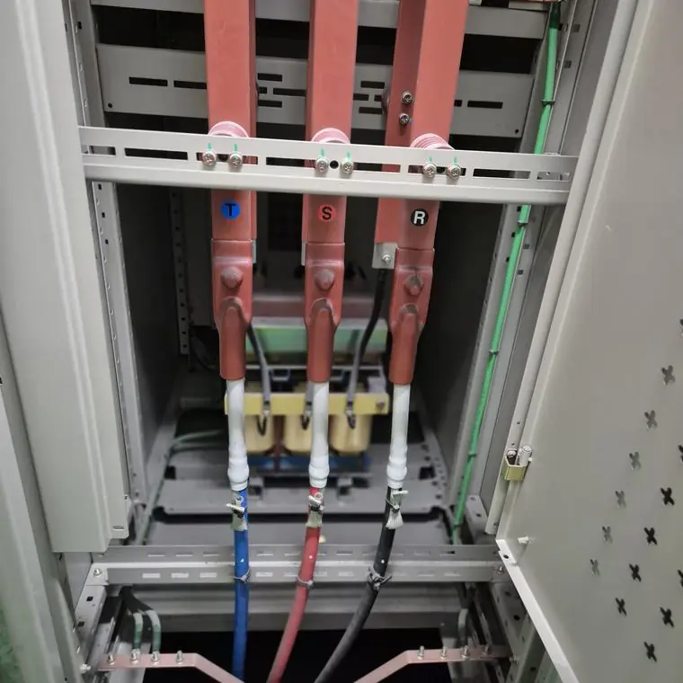
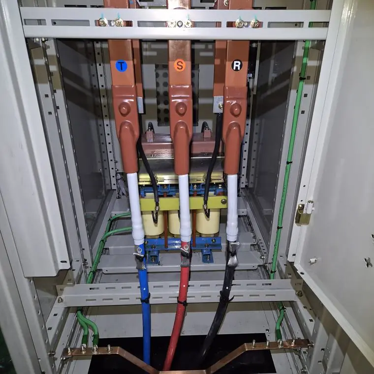

청소 후 먼지가 다시 쌓이는 것을 줄이려면?
최종 수정 2026-11-09
청소 후에도 환경이 같으면 먼지는 다시 쌓입니다. 문틈과 케이블 구멍 밀폐, 환기와 제습, 정기 점검 주기 설정으로 재오염을 줄일 수 있습니다.
환경 관리
- 문틈, 배관·케이블 관통부 밀폐
- 환기구 필터 점검
- 제습과 결로 관리
- 외부 분진 유입 차단
작업 전

작업 후

점검 주기
환경에 맞춰 정기 점검 주기를 정하세요.
안전
전기설비를 직접 물이나 일반 세제로 청소하는 것은 감전·단락 위험이 있어 권하지 않습니다. 반드시 전문 업체와 전기안전관리자에게 먼저 확인하세요.
자주 묻는 질문
재오염되면 다시 청소해야 하나요?
오염 정도에 따라 다르며 정기 점검에서 판단합니다.
제습기만으로 충분한가요?
습기 관리에는 도움이 되지만 분진은 별도 관리가 필요합니다.
설비 사진과 정보를 남기시면 확인 후 견적을 안내해 드립니다.
무료 견적 문의하기이 글은 시공 업체가 공개한 자료와 일반적인 전기설비 관리 상식을 바탕으로 작성했습니다. 설비별 적용 여부와 결과는 현장 확인 후 달라질 수 있습니다.